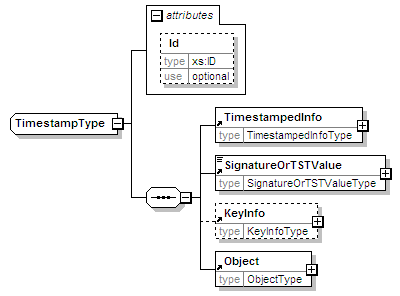

| diagram |  | ||||||||||||
| namespace | urn:oasis:names:tc:evs:schema:eml:ts | ||||||||||||
| children | TimestampedInfo SignatureOrTSTValue KeyInfo Object | ||||||||||||
| used by |
|
||||||||||||
| attributes |
|
||||||||||||
| source | <xs:complexType name="TimestampType"> <xs:sequence> <xs:element ref="TimestampedInfo"/> <xs:element ref="SignatureOrTSTValue"/> <xs:element ref="KeyInfo" minOccurs="0"/> <xs:element ref="Object"/> </xs:sequence> <xs:attribute name="Id" type="xs:ID" use="optional"/> </xs:complexType> |
| type | xs:ID | ||||
| properties |
|
||||
| source | <xs:attribute name="Id" type="xs:ID" use="optional"/> |